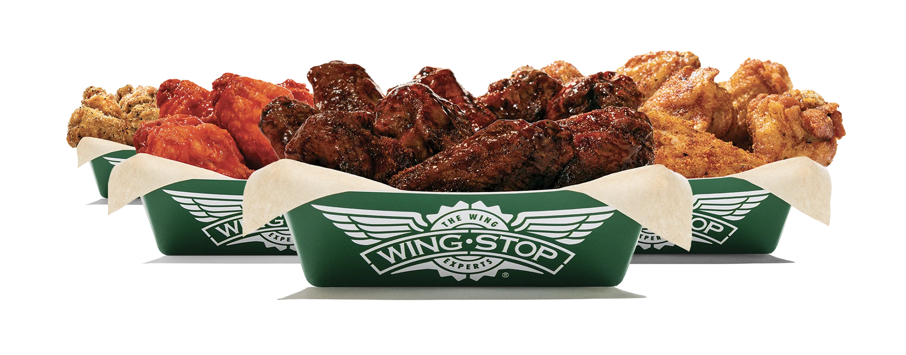
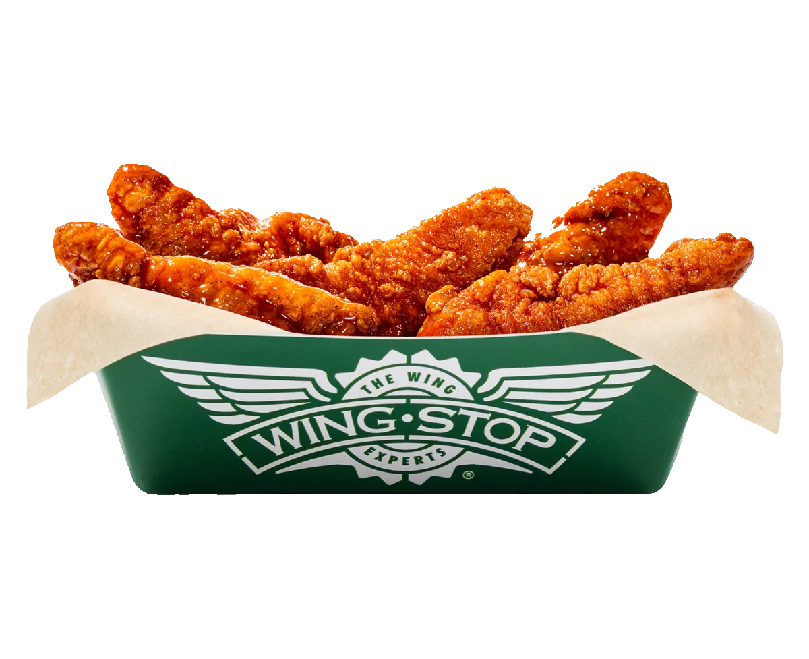

ORDERING GUIDE
Wingstop Keto and Low-Carb Guide: What to Order

Ordering lower carb at Wingstop is possible, but the useful question is not whether one menu item can be called “keto.” The real question is whether the complete order, including flavor, dip, side, drink and portion size, fits the carbohydrate target you follow. Build the meal from the chicken outward and verify current nutrition data before checkout.
The Direct Answer
- Classic wings are the strongest lower-carb starting format because Wingstop describes them as unbreaded.
- Boneless wings and crispy tenders are breaded and contain wheat.
- A dry rub is not automatically carbohydrate-free; verify the current number.
- Fries and loaded fries are the first obvious items to replace.
- Dips and drinks count toward the complete meal.
- “Keto-friendly” is not a medical guarantee or a promise that an individual will remain in ketosis.
Wingstop can fit a lower-carb eating pattern when the order is kept simple. Complexity is the enemy here. Every extra flavor, loaded side and dipping sauce introduces another value that needs checking. A classic-wing order with one verified flavor is easier to calculate than a mixed box with two sauces, cheese fries, ranch and a sweet drink. Simpler does not mean flavorless; it means every choice has a reason and a known place in the total.
Choose the Chicken Format Before the Flavor
Classic wings are bone-in and unbreaded, which makes them the logical first choice for someone limiting carbohydrates. The meat, skin and cooking method still contribute calories, fat, protein and sodium, but the product does not begin with the wheat-based breading used on boneless wings and tenders. This distinction is more useful than choosing a flavor first and discovering later that the chicken format already moved the meal away from the target.
Boneless wings are breaded pieces of white meat. Crispy tenders are also breaded and fried. Both can be enjoyable menu items, but they are not direct nutritional substitutes for classic wings. A “six-piece” comparison can be misleading because piece size and formulation differ. Use the current per-piece information for the exact format rather than treating every piece of chicken as nutritionally equal.
Classic does not mean risk-free for allergies. Wingstop's allergen declaration says cross-contact can occur, and local product pages discuss shared oil. Anyone avoiding wheat because of celiac disease or an allergy needs the separate Wingstop gluten-free ordering guide. Lower carbohydrate and gluten-free are different goals, even when the same classic-wing format appears in both conversations.
Piece count comes next. Six wings can suit a light lunch, eight work well when a side is included, and 10 make the chicken the center of a full meal. Those are planning ranges, not promises of fullness. Someone who skips fries may prefer the larger chicken count, while someone adding a substantial dip may choose fewer pieces. The Wingstop combo guide explains portion tradeoffs in more detail.

How to Choose a Lower-Carb Wingstop Flavor
Plain wings create the easiest calculation because no flavor is added after cooking. Plain does not mean nutritionally empty; the wings still contain calories, fat, protein and sodium. It simply removes one uncertain layer. For a first attempt at building a lower-carb order, Plain wings with a measured dip can be more predictable than selecting a sauce based on an old online list.
Lemon Pepper, Original Hot, Mild and Cajun frequently appear in third-party low-carb discussions. That pattern is useful for research, but it is not enough to publish an exact promise. Formulations and serving assumptions can change. Use Wingstop's current nutrition information to confirm carbohydrates for the selected flavor and piece count on the day you order.
Dry does not automatically mean zero carbohydrate. A rub can contain sugar or other carbohydrate-containing ingredients, while a wet sauce can sometimes have a relatively modest value. Texture describes how the flavor is applied; it does not provide a complete nutrition label. The same warning applies to heat. Atomic sounding intense does not tell you its carbohydrates, and a mild flavor is not automatically higher or lower.
A single verified flavor is the cleanest approach. If variety matters, choose two flavors only after checking both. Divide the piece count accurately when calculating the final meal. Five pieces in one flavor and five in another require two separate calculations, not the nutrition value of whichever side looks more favorable. Our Wingstop flavor guide can help narrow choices by taste before the official numbers make the final decision.
Extra sauce and seasoning also matter. A standard published serving may not reflect an extra-wet request, additional seasoning or dip used as a third flavor. If the order depends on a tight carbohydrate limit, avoid customizations that make the applied quantity difficult to estimate. Ask for sauce on the side only when you are prepared to portion it rather than pouring the entire container over the wings.
Sides, Dips and Drinks Can Change the Entire Order
Seasoned Fries, Cheese Fries, Louisiana Voodoo Fries and Buffalo Ranch Fries are potato-based sides. They do not fit the role of a lower-carb side, even when the wing portion itself is carefully chosen. Loaded fries add cheese sauce, ranch or other toppings on top of the potato base. Replacing the fries is a more meaningful change than arguing over a tiny difference between two wing flavors.
Veggie sticks are the clearest substitution when available. Carrot sticks contain more carbohydrate than celery, but the combined side is still structurally different from a serving of fries. Availability and substitution rules vary, so confirm the selected store permits the swap. The fries and sides guide explains what each side contributes to a normal order.
Ranch may fit some lower-carb targets, but it is not a free item nutritionally. It adds calories, fat, sodium and allergens, and repeated dipping makes the consumed portion difficult to estimate. One measured cup divided across the meal is easier to track than several open containers. Bleu cheese and honey mustard require their own current values; do not assume every creamy dip behaves like ranch.
Drinks are the easiest place to avoid unnecessary sugar. Water, bottled water, diet soda or another unsweetened option can keep the beverage from controlling the carbohydrate total. Regular fountain drinks and lemonade can add a large amount of sugar without making the meal more filling. Check the current beverage label and serving size rather than assuming a cup contains one standardized portion.
Ready-Made Lower-Carb Wingstop Orders
The simplest order
Choose six to 10 Plain classic wings, veggie sticks and water. Add one dip only after verifying its current nutrition and allergen information. This build is not exciting on paper, but it provides the cleanest baseline and makes it easy to understand which component changes the meal when you customize it later.
The flavor-first order
Choose eight or 10 classic wings in one flavor whose current carbohydrate value fits your target. Add veggie sticks, one measured ranch or bleu cheese if appropriate, and an unsweetened drink. Keeping one flavor makes the calculation easier and reduces the chance of confusing the nutrition of two separate sauces.
The two-flavor order
Split 10 classic wings between two verified flavors. Use five pieces of each, veggie sticks and water. Calculate both halves separately. This gives variety without adding a second side or an unmeasured sauce. If the local menu does not allow an even split, use the quantities shown in the cart rather than assuming five and five.
The group order
Reserve one clearly labeled classic-wing batch for lower-carb diners. Use one or two verified flavors and keep breaded chicken in separate containers. Separate packaging helps organization but does not eliminate kitchen cross-contact. Our party-pack guide can help calculate the total chicken count for the entire group.
Common Low-Carb Ordering Mistakes
The first mistake is calling a menu item keto based on its name. “Classic,” “dry,” “hot” and “plain” describe the product, not the complete metabolic result. The second mistake is calculating only the wings while ignoring dip, side and drink. The third is using a nutrition screenshot from several years ago when the current official document is available.
Another mistake is ordering boneless wings because white meat sounds leaner. Lean and low carbohydrate are not synonyms; breading changes the equation. Similarly, a salad-like side name does not guarantee a lower-carb preparation. Check the actual component and serving size instead of relying on a health halo.
Do not under-order chicken simply to make the published total look smaller, then add fries because the meal is not filling. Start with a realistic appetite. A larger classic-wing count with veggie sticks may align better with the stated goal than a tiny combo followed by an unplanned side. Nutrition planning should produce an order you can actually follow.
How to Use Wingstop Nutrition Data Correctly
Start with the per-piece or serving value for classic wings, multiply by the actual count, then add the selected flavor. Continue with the full side, dip and drink. Confirm whether the published entry represents one piece, one serving or an entire container. Mixing those units is one of the easiest ways to underestimate a restaurant meal.
Published restaurant values are estimates based on standard formulations. Actual preparation, piece size and customization can vary. A number accurate enough for general planning may not be precise enough for medication dosing or a tightly controlled medical diet. In those situations, use professional advice and contact Wingstop for current product details.
Keto is also broader than one restaurant meal. Total daily carbohydrate intake, fiber conventions, medications, activity and individual response can affect the outcome. This article provides an ordering framework, not a guarantee that a person will enter or remain in ketosis. The most honest lower-carb order is one built from current data with clearly stated uncertainty.
Final Cart Check
Review the selected restaurant, chicken format, piece count, flavor, side, dip and drink once more before payment. A substitution, extra sauce or promotional add-on can change the calculation made earlier, so the completed cart must match the planned meal.
FAQ
Are Wingstop classic wings keto-friendly?
Classic wings are the strongest lower-carb starting format because they are unbreaded, but the flavor, quantity, dip, side and drink determine the complete meal. Verify current values rather than treating the format alone as a guarantee.
Are Wingstop boneless wings low carb?
Boneless wings are breaded and contain wheat, so they generally contain more carbohydrate than classic wings. Check the exact current portion if you are comparing them.
Which Wingstop flavor has the fewest carbs?
The answer can change with current formulations and serving definitions. Plain provides the simplest baseline, while every flavored option should be checked in Wingstop's current nutrition guide.
Can I eat Wingstop ranch on keto?
Ranch may fit some personal carbohydrate targets, but portion size, calories, sodium and allergens still matter. Verify the current value and measure how much you use.
What side should I order instead of fries?
Veggie sticks are the clearest lower-carb substitution when available. Confirm the local store allows the swap and review any dip separately.